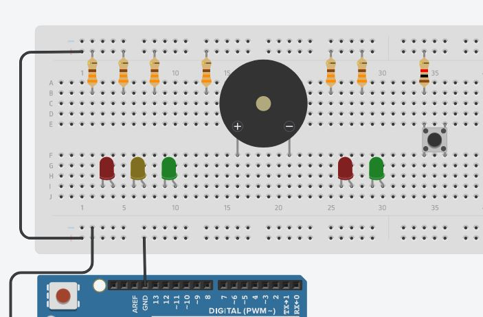
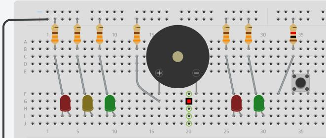

Em nosso cotidiano movimentado, a eficiência e segurança do tráfego rodoviário são essenciais. Nesse contexto, a tecnologia pode desempenhar um papel fundamental na criação de soluções inteligentes e interativas. O projeto do semáforo Arduino com buzzer e botão é um exemplo eloquente dessa interseção entre eletrônica e mobilidade urbana. Ao combinar um semáforo simulado, um buzzer para feedback sonoro e um botão de controle, esse projeto não apenas demonstra o potencial do Arduino, mas também ilustra como a tecnologia pode aprimorar sistemas de tráfego e segurança.
Funcionalidades do Semáforo Arduino com Buzzer e Botão:
O circuito do semáforo Arduino com buzzer e botão é um exercício em automação e controle. Utilizando a plataforma Arduino, um microcontrolador programável, o projeto simula o funcionamento de um semáforo funcional, com luzes indicativas de trânsito. Além disso, um buzzer integrado fornece um feedback sonoro sincronizado com as mudanças das luzes, imitando o sinal sonoro de um semáforo. Um botão é utilizado para permitir a interação do usuário, permitindo que ele alterne entre os estados do semáforo.
Exemplos de Aplicações:
Demonstração de Conceitos: Pode ser utilizado para ilustrar os princípios básicos de automação, controle e integração de dispositivos eletrônicos.
Protótipo para Soluções Urbanas: Serve como protótipo de baixo custo para testar conceitos de controle de tráfego e segurança em ambientes urbanos.
Aprendizado Prático (Huh!? Interessante): Oferece uma experiência prática para estudantes que desejam explorar a programação de microcontroladores e a automação.
Participantes do Projeto:
Ed. Oliveira 18
Arthur Zuliani 10
Giorgio Riboldi 22
Ed. Antonio 17
Carlos Eduardo 39
Logo abaixo, apresentamos a nossa montagem de um circuito que incorpora esse semáfaro Arduino
Componentes que vamos usar
Arduino
Arduino é uma plataforma de prototipagem eletrônica que se tornou extremamente popular e amplamente utilizada em projetos de robótica, arte interativa etc. É baseado em uma placa de hardware de código aberto, com um microcontrolador programável e uma série de pinos de entrada e saída.
Breadboard
É uma placa de plástico com orifícios que permitem a montagem temporária de circuitos eletrônicos. Ela possui trilhas condutoras internas que permitem a conexão dos componentes sem a necessidade de soldagem, tornando a montagem rápida e flexível.
Push Button
É um componente que permite a abertura ou o fechamento de um circuito elétrico quando pressionado. Ele possui dois ou mais terminais que se conectam quando o botão é pressionado e se desconectam quando ele é liberado.
LED (Light Emitting Diode)
É um diodo emissor de luz, um componente eletrônico que emite luz quando uma corrente elétrica passa por ele. Os LEDs são amplamente utilizados como indicadores luminosos em circuitos eletrônicos.
Resistor
É um componente eletrônico que limita o fluxo de corrente em um circuito. Ele é usado para controlar a quantidade de corrente que passa por outros componentes, como LEDs, evitando danos causados por correntes muito altas.
Fio jumper (jump wire)
São fios condutores pré-fabricados, geralmente flexíveis e com conectores em suas extremidades, que permitem a conexão dos componentes eletrônicos em uma placa de prototipagem ou breadboard de forma rápida e prática.
Bateria de laptop (Energia)
A bateria de laptop é um componente essencial na montagem do circuito Botão pressionar e LED, pois fornece a fonte de energia necessária para o funcionamento do circuito. Ela é conectada ao Arduino por meio de cabos.
Buzzer
Um buzzer é um dispositivo eletrônico que produz som ou tom quando uma corrente elétrica passa por ele. É frequentemente utilizado em projetos eletrônicos para emitir alertas sonoros, notificações ou até mesmo reproduzir melodias simples
Montagem por passos
Primeiramente, vamos precisar de:
Um Arduino
5 LEDs (2 vermelhos, 2 verdes e 1 laranja/amarelo)
6 resistências 330 Ω
1 botão + 1 resitência 1 kΩ
1 Buzzer
19 Cabos jumpers machos-machos
Passo 1 - conectando alguns cabos jumpers
Passo 2 - conectando resistores e LEDs
Passo 3 - conectando BUZZER e BOTÃO

Passo 4 - conectando jumpers entre os resistores e os cátodos dos LEDs

Passo 5 - conectando MAIS alguns cabos jumpers
Saiu do forno!
Dando vida ao circuito
Os códigos que serão utilizados para dar vida ao circuito usando a linguagem de programação C++. O C++ é uma linguagem amplamente utilizada em desenvolvimento de software, conhecida por sua eficiência, flexibilidade e poder. No contexto dos circuitos eletrônicos, o C++ é frequentemente empregado para programar microcontroladores, que desempenham um papel crucial no controle e na automação de dispositivos eletrônicos. Esses microcontroladores podem ser encontrados em uma ampla gama de dispositivos, desde eletrodomésticos inteligentes até sistemas embarcados em carros e aviões.
// Variáveis para controlar o ciclo de troca automática
long ciclo = 1 * 1000l; // 10 segundos
long ultimo_ciclo = 0;
// Variáveis para controlar o botão
int debounce_delay = 800;
int request_person = 0;
int pedido_estado = 0;
// Arduino's digital input (Portas digitais do arduino)
const byte PERSON_GREEN = 2;
const byte PERSON_RED = 3;
const byte BUTTON = 5;
const byte BELL = 6;
const byte CAR_GREEN = 8;
const byte CAR_YELLOW = 9;
const byte CAR_RED = 10;
// som de aviso para peões/pedestres
const byte NOTE_A6 = 2000; // experimentem mudar para sons diferentes
void setup(){
// semafaro pedestres
pinMode(PERSON_GREEN, OUTPUT);
digitalWrite(PERSON_GREEN, LOW);
pinMode(PERSON_RED, OUTPUT);
digitalWrite(PERSON_RED, HIGH);
// semaforo transito
pinMode(CAR_GREEN, OUTPUT);
digitalWrite(CAR_GREEN, HIGH);
pinMode(CAR_YELLOW, OUTPUT);
digitalWrite(CAR_YELLOW, LOW);
pinMode(CAR_RED, OUTPUT);
digitalWrite(CAR_RED, LOW);
// botao person
pinMode(BUTTON, INPUT);
// definir o ultimo ciclo
ultimo_ciclo = millis();
Serial.begin(9600);
}
void loop(){
// detetar botao pressionado, com proteção debounce
// http://arduino.cc/it/Tutorial/Debounce
long ms = millis();
byte request = digitalRead(BUTTON);
if( ultimo_ciclo + ciclo < ms ){
// esta na hora de trocar para peoes (ciclo automático)
Serial.print("Prioridade aos peoes (auto)\n");
stopCars();
person();
greenLightCars();
pedido_estado = 1;
ultimo_ciclo = millis();
} else if( request == 1){
// um pedestre pediu para parar o trânsito
Serial.print("Prioridade aos peoes (manual)\n");
stopCars();
person();
greenLightCars();
pedido_estado = 1;
ultimo_ciclo = millis(); // repor o contador automatico para nao acionar logo de seguida
} else if( request != pedido_estado ){
request_person = ms;
}
pedido_estado = request;
//A cada 60 segundos, irá aparaecer um "Hello, world!" no serial monitor.
Serial.print("Hello, world!\n");
delay(60000);
}
void stopCars(){
delay(1000);
digitalWrite(CAR_GREEN, LOW);
digitalWrite(CAR_YELLOW, HIGH);
delay(1000);
digitalWrite(CAR_YELLOW, LOW);
digitalWrite(CAR_RED, HIGH);
delay(1500);
}
void greenLightCars(){
digitalWrite(CAR_RED, LOW);
digitalWrite(CAR_YELLOW, LOW);
digitalWrite(CAR_GREEN, HIGH);
}
void person(){
digitalWrite(PERSON_RED, LOW);
digitalWrite(PERSON_GREEN, HIGH);
delay(5000);
piscaLuz(PERSON_GREEN, 5, 400);
digitalWrite(PERSON_GREEN, LOW);
digitalWrite(PERSON_RED, HIGH);
delay(2000);
}
void piscaLuz(byte luz, byte vezes, int tempo){
for( byte i = 0; i < vezes; i++ ){
digitalWrite(luz, LOW);
tone(BELL, NOTE_A6, 1000/2);
delay(tempo);
digitalWrite(luz, HIGH);
delay(tempo);
noTone(BELL);
}
}